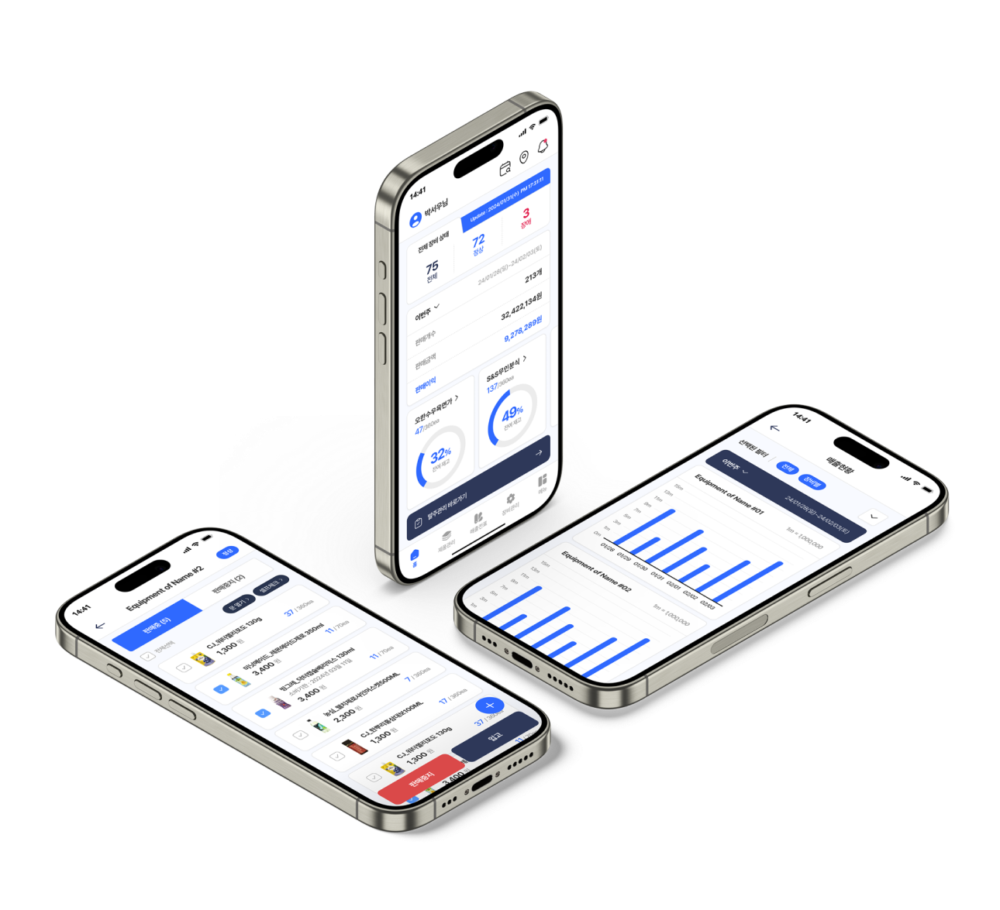
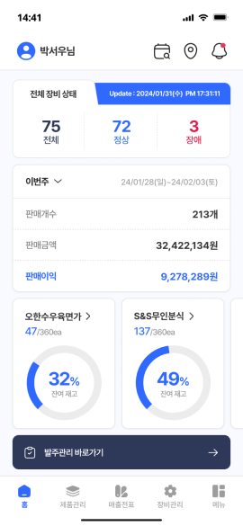
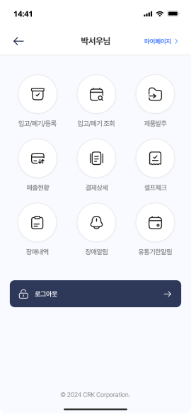
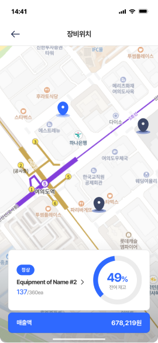
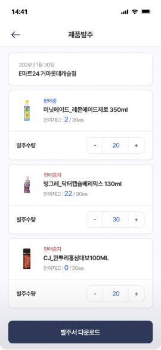
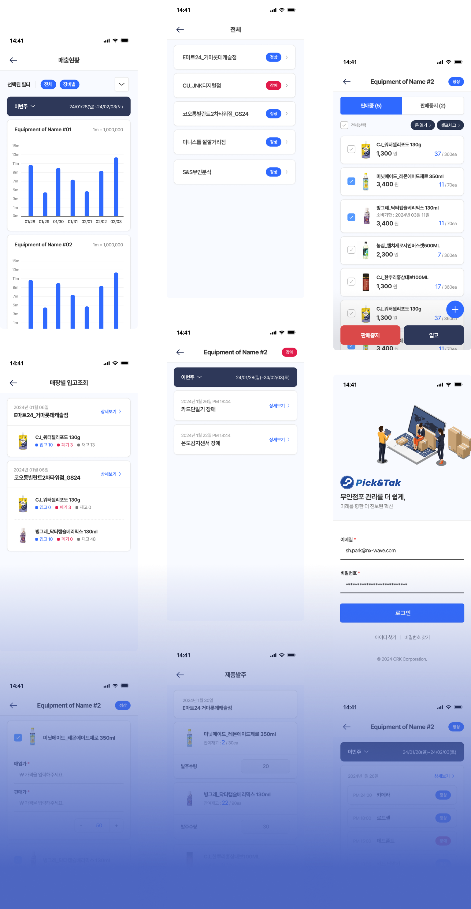
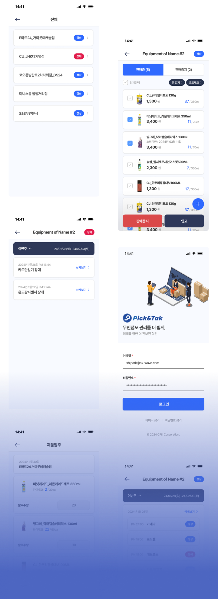

Overview
CRK_핀앤탁
무인점포 관리를 더 쉽게, 스마트한 모바일 라이프
CRK_핀앤탁은 무인점포를 보다 쉽게 관리 할 수 있도록 만들어진 브랜드입니다.
점포관리부터 기기별 재고관리, 매출현황, 발주관리까지 무인점포 경영에 필요한 서비스를
하나의 통합형 채널로 관리 할 수 있도록 ‘CRK_핀앤탁’ 앱을 구축하였습니다.
통일된 디자인을 통해 일관된 경험을 제공
UI기준을 통일하여 커뮤니케이션 시간을 단축
중복되는 컴포넌트를 제거하고
디자인 요소 재사용을 통해 효율성을 강화
Project Goal
일관된 디지털 경험 제공
점포관리부터 기기별 재고관리, 매출현황,
발주관리까지 원스톱 채널
최신 트렌드에 맞는 UX/UI를 적용하되 쉽고 간편하게 서비스를 이용할 수 있도록 하였고,
매장 방문 여부와 관계없이 고객에게 One 채널 사용성을 제공하여 공격적인 운영/효율적인 재고관리에
초점을 맞출 수 있도록 제작하였습니다.
단순한 통합형 채널을 넘어서서 ’CRK_핀앤탁’브랜드 가치를 높이며, 쉽고 간편하게 사용할 수 있는
편리한 플랫폼이 될 수 있도록 구축되었습니다.




UX/UI strategy
물 흐르듯 자연스러운 유연함
고객에게 필요한 서비스에 접근성을 높이다.
핵심적인 프로세스을 이용하는 고객들을 위해 직관적인 UI/UX를 설계하여
판매중인 목록에서 개별 상품의 판매중지, 입고, 신규 상품 추가, 매입가 및 판매가 와 같은 기능을
프로세스 간 흐름이 끊김 없이 사용할 수 있도록 설계하여, 쉬운 접근성을 제공하고 있습니다.

